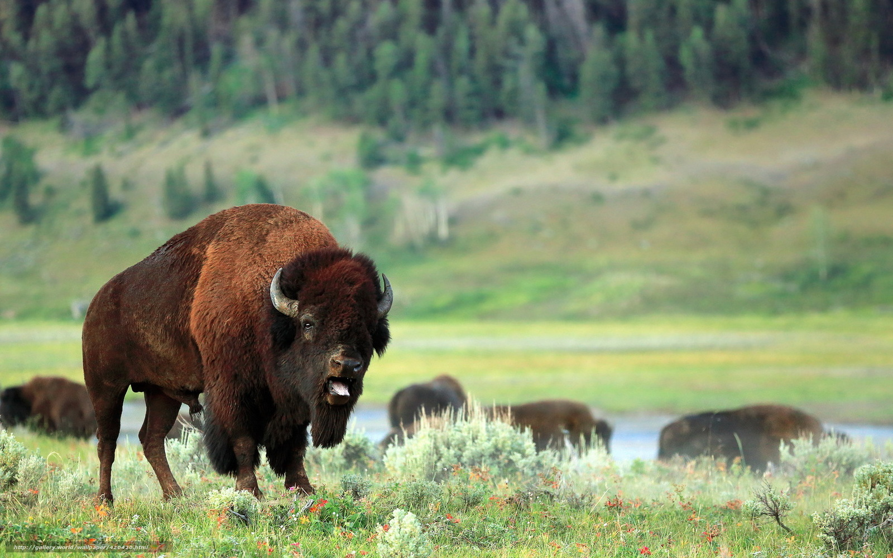

Durata de viata: Intre 25 si 30 ani
Unde traieste (mediu de viata): Paduri de pin si molid
Dieta: Erbivor
Clasa: Mamifere
Nume stiintific: Bison bonasus
Ce mananca (mancarea principala): Iarba,plante lemnoase,fan
Predatori: Oamenii
Cateva cuvinte merita cu siguranta zimbrul, care mai traieste acum doar in rezervatia naturala din Muntii Hategului. In anul 1927, mai putin de 50 de exemplare de zimbri mai erau in viata pe intreaga lor arie de raspandire de pe planeta. Aceasta specia de bizoni este in continuare amenintata, mai ales din cauza cosangvinitatii. Oamenii de stiinta care au reusit sa repuna pe picioare specia cat-de-cat n-au putut repara si diversitatea genetica necesara oricatei specii vii pentru a supravietui bolilor.
Sistemul imunitar al zimbrilor este slabit. Prin anul 1930 braconierii exterminasera deja toti zimbrii care mai erau in salbaticie.
Initiativa refacerii in Romania a acestui fond faunistic pretios al padurilor din Muntii Carpati, ce adaposteau odinioara numeroase turme, a inceput acum 46 de ani, cand la 12 noiembrie 1958 o pereche de zimbri a fost adusa din Polonia in padurea Slivut-Hateg, judetul Hunedoara.In prezent, zimbrul european se gaseste doar in captivitate si anume 3 rezervatii apartinand Regiei Nationale a Padurilor - Romsilva (Vanatori-Neamt, Hateg- Slivut si Neagra-Bucsani ). De asemenea, se gasesc si in Gradina Zoologica Targoviste si Gradina Zoologica Bucuresti.
Rezervatia "Dragos-Voda" Vanatori-Neamt, aflata in raza Parcului Natural Vanatori Neamt a fost infiintata in anul 1968, iar in anul 1970, au fost aduse 3 exemplare de zimbri, originare din Polonia. In anul 1974 se nasc primele doua exemplare de zimbru in cadrul rezervatiei : Rosina si Roco. In anul 1977, la 24 noiembrie, au fost adusi din ex-URSS 5 zimbri caucazieni: Medalist, Mentol, Metocika, Meringhia si Mexicana. Dupa anul 1977, s-au realizat mai multe schimburi intre exemplarele de zimbri din rezervatiile existente in Romania in scopul mentinerii diversitatii genetice.In momentul actual, se gasesc 4 exemplare de zimbri (2 femele, un mascul si un vitel de zimbru de sex feminin) intr-un tarc de aproximativ 4 ha.
De asemenea, in iernile aspre si geroase, unii zimbri din Rezervatia Bucovinskaia (Ucraina) traverseaza granita haladuind in nordul tinuturilor sucevene aflate la o distanta de aproximativ 80 km de Rezervatia "Dragos-Voda" Vanatori-Neamt.
Rezervatia Neagra-Bucsani, subunitate a Directiei Silvice Targoviste, a fost infiintata in anul 1980, avand o suprafata destinata tarcurilor de 162 ha in padurea Neagra intre paraurile Crivat si Neagra din zona Bucsanilor, cu o clima de zona de cimpie piemontana si dealuri mijlocii. In acest moment in rezervatie se afla un numar de aproximativ 32 exemplare de zimbri.
Rezervatia Hateg-Slivut, subunitate a Directiei Silvice Deva, se mandreste cu faptul de a fi primul loc de pe teritoriul Romaniei, unde zimbrul european si-a facut reaparitia. Acest fapt s-a intamplat acum 46 de ani, la 12 noiembrie 1958, cand o pereche de zimbri a fost adusa din Polonia. Rezervatia cinegetica in care pot fi intalniti si alti reprezentanti ai faunei carpatine are o suprafata de 787,4 hectare, din care 489,2 ha parcul cinegetic propriu-zis, iar 298,2 ha fiind zona tampon. In acest moment in rezervatie se afla un numar de aproximativ 4 exemplare de zimbri.
Curiozitati:
- Zimbrul este cel mai greu animal european de pe uscat.
- Este un animal masiv, masculul atingand pana la 300 cm lungime.
- Femela ajunge la maturitate sexuala dupa 2 ani, iar masculii la 4 si 5 ani.
- Imperecherile au loc, de regula, in august-septembrie.
- In timpul verii, zimbrul (Bison bonasus) consuma aproximativ 32 kilograme de hrana pe zi, iar femelele aproximativ 23 kilograme.

- In sezonul de imperechere,masculul se plimba prin grup dupa femela si apoi o fereste de ceilalti masculi.
- Zimbrul a fost mereu un animal impresionant, legendar, venerat.
- In ratia zimbrului intra circa 131 specii de plante si 27 specii de arbori si arbusti.
- Zimbrii se hranesc intens inainte de rasaritul soarelui.
- Zimbrul nu este doar mai inalt decat bizonul, ci este si mai zvelt si are o constitutie fizica mai atletica care-i permite sa fie mai agil.